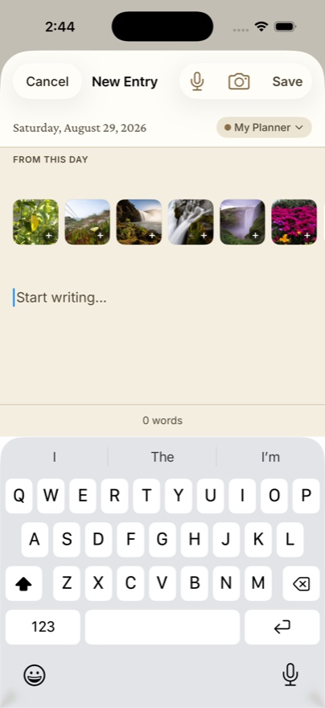

You take photos on the days that matter — you just never look at them again. A photo journal fixes that, and the tedious part (finding the right photos) is exactly what software should do for you.
Photos from that day, automatically
When you write about any date in Dayleaf, the editor shows a "From this day" strip: the photos you took on that exact date, pulled from your library. Writing up last Saturday's hike three days later? The trail photos are already there — one tap attaches them. No scrolling through a sea of screenshots.

The photo wall
Flip on photo mode (the little photo icon above the calendar) and your month turns into a wall of memories — each day's cell filled by its photo, Day One-style. Scroll vertically through the months and your year becomes a filmstrip.
A simple weekend practice
- Sunday evening, open Dayleaf and tap back through the week.
- For any day with a dot in the "From this day" strip, attach the best photo and write one caption-length line.
- That's it — five minutes, and the week is kept.
📸 Free includes one photo per entry — enough for the practice above. Dayleaf Pro raises it to ten and adds videos, for the trip-journal days.